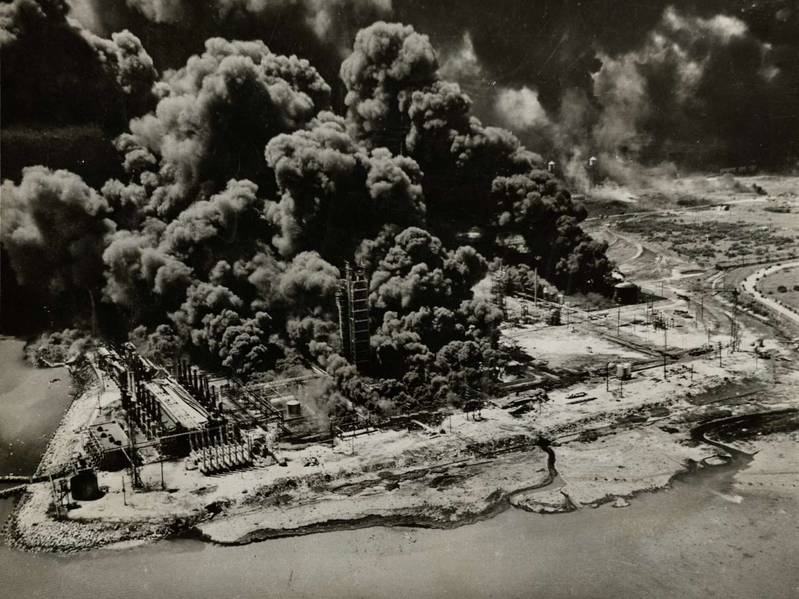

The Texas City Disaster
A Floating Bomb: On the morning of April 16, 1947, the French freighter SS Grandcamp was docked at the Port of Texas City, loaded with 2,300 tons of ammonium nitrate fertilizer. Around 8:00 AM, a small fire was discovered in the cargo hold. In a fatal attempt to save the cargo from water damage, the captain ordered the hold to be sealed and pumped full of pressurized steam to smother the flames. Instead of extinguishing the fire, the steam increased the heat and pressure, turning the cargo hold into a massive pressure cooker. As the temperature soared, the ammonium nitrate reached its detonation point. At 9:12 AM, the Grandcamp exploded with such force that it was felt 150 miles away. The blast leveled the nearby Monsanto Chemical Company plant and triggered a 15-foot tidal wave that swept through the docks. Burning debris ignited oil storage tanks across the waterfront, creating a chain reaction of fires and smaller explosions.

The tragedy was compounded early the next morning when a second ship, the SS High Flyer, which was also carrying ammonium nitrate and had been ignited by the first blast, detonated in the harbor. The two explosions combined to create an apocalyptic scene of industrial ruin.
The Heavy Toll: The disaster remains the deadliest industrial accident in United States history. It claimed the lives of approximately 581 people, including 27 of the 28 members of the Texas City Volunteer Fire Department, who were on the docks fighting the initial fire when the ship blew up. Thousands more were injured, and the port was virtually erased.
Key Facts
Date: April 16–17, 1947
Location: Texas City, Texas, United States
Casualties: ~581 dead, over 5,000 injured; billions in property damage; deadliest industrial accident in U.S. history
Cause: A fire on a cargo ship that triggered the detonation of 2,300 tons of ammonium nitrate, exacerbated by a second ship explosion and the ignition of nearby chemical and oil facilities
The scale of the loss was so great that it prompted the first-ever class-action lawsuit against the U.S. government under the Federal Tort Claims Act. The Texas City disaster fundamentally changed the global understanding of chemical safety. It proved that seemingly stable agricultural products like fertilizer could become weapons of mass destruction if handled improperly.
The tragedy led to the immediate implementation of strict new regulations for the storage, labeling, and maritime transport of hazardous materials. It also served as a catalyst for the modernization of industrial firefighting techniques and the establishment of more rigorous emergency response protocols for ports and chemical manufacturing hubs worldwide.